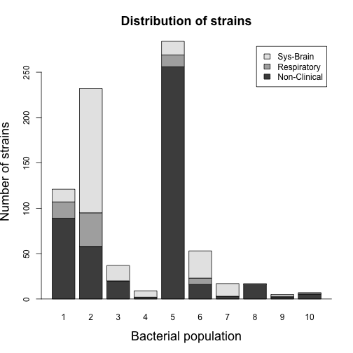

Graphical analysis in R
Mukarram Hossain
Department of Veterinary Medicine
University of Cambridge
7 October, 2019
Introduction
- Graphs are a powerful way to present data and results in a concise manner.
- Graphs are more readily understandable than words and numbers.
- Good graphs are useful in examining data to get idea about the patterns that may exist.
- Graphs can also aid in selecting correct statistical analysis.
R has powerful and flexible graphical capabilities.
Graphical analysis in R
- Graphical analysis in R is done by calling a series of graphics functions.
- These functions produce either:
- a complete plot, or
- adds some output to an existing plot.
- R graphics follows a painter's model.
- Sophisticated packages are developed e.g.
ggplot2.
Analysis of a bacterial dataset using R
The dataset
- Our dataset for today contains information about bacterial whole genome sequences.
- For each bacterial strains we have the following features:
- Country of isolation
- Population group
- Phenotype
- Genome length
- Percentage of GC content
- No. of coding sequences
The dataframe
strainInfo <- read.csv('dataset.csv', header = T, quote = "", na.strings = "?")
head(strainInfo,10)
## Strain Country GenomeSize Phenotype Population CDS GC
## 1 Strain1 Canada 2098424 Non-Clinical 1 1993 0.4106
## 2 Strain2 Canada 2099479 Non-Clinical 1 1993 0.4106
## 3 Strain3 Canada 2133605 <NA> 1 2070 0.4108
## 4 Strain4 UK 2143407 <NA> 1 2053 0.4097
## 5 Strain5 UK 2144506 <NA> 1 2049 0.4097
## 6 Strain6 Canada 2145656 Sys-Brain 1 2065 0.4105
## 7 Strain7 Canada 2149163 Sys-Brain 1 2082 0.4097
## 8 Strain8 Canada 2151107 Sys-Brain 1 2085 0.4100
## 9 Strain9 UK 2155971 Respiratory 1 2080 0.4095
## 10 Strain10 Canada 2156465 Respiratory 1 2089 0.4103
Strains by Country of isolation (Pie chart)
pie.data <- table(strainInfo$Country)
lbls <- paste(names(pie.data), "\n", pie.data, sep="")
pie(pie.data, labels = lbls, cex = 1.5, cex.main = 1.5,
main="Pie Chart of Country\n (with number of strains)")
Distribution of GC content (Histogram)
hist(strainInfo$GC, breaks = 5, cex = 1.5,
main = 'Distribution of GC content',
xlab = 'GC content (%)', lwd = 2,
cex.lab = 1.5, cex.main = 1.5, cex.axis = 1.2)

Disease causing strains have fewer genes?? (Boxplot)
boxplot(strainInfo$CDS ~ strainInfo$Phenotype, cex.lab = 1.3, cex.main = 1.5, cex.axis = 1.3,
ylab='Number of genes', xlab='Phenotype',
main='Number of genes by phenotypes', col=c("antiquewhite3","burlywood2","gold3"))

Systemic strains have fewer genes (Violin plot)
vioplot(x1, x2, x3, cex.lab = 1.3, cex.main = 1.5, cex.axis = 1.3,
names=c("Non-Clinical","Respiratory","Sys-Brain"),
col=c("antiquewhite3","burlywood2","gold3"),main='Number of genes by phenotypes')
## [1] 1843 2470
Genome length is correlated with number of genes (Scatter plot)
plot(strainInfo$GenomeSize,strainInfo$CDS, cex.lab = 1.5,
col = c("blue","burlywood2","red")[strainInfo$Phenotype],
xlab = 'Genome length', ylab = 'Number of genes')
abline(lm(strainInfo$CDS ~ strainInfo$GenomeSize), col = 'black', lwd = 2)

Bacterial population structure and phenotypes (Stacked barplot)
counts <- table(strainInfo$Phenotype,strainInfo$Population)
barplot(counts, main = "Distribution of strains", cex.lab = 1.5,
xlab = "Bacterial population", cex.main = 1.5,
ylab = 'Number of strains', legend = rownames(counts))
abline(h = 0)

Multiple plots in a grid

Multiple plots in a grid (R code)
par(mfrow=c(1,2))
hist(strainInfo$GC, breaks = 5,
main = 'Distribution of GC content',
xlab = 'GC content (%)')
box()
plot(strainInfo$GenomeSize,strainInfo$CDS,
col = c("blue","burlywood2","red")[strainInfo$Phenotype],
xlab = 'Genome length', ylab = 'Number of genes',
main = 'Correlation')
abline(lm(strainInfo$CDS ~ strainInfo$GenomeSize), col = 'black', lwd = 2)
Saving plots in files (R code)
png('MyImage.png')
par(mfrow=c(1,2))
hist(strainInfo$GC, breaks = 5,
main = 'Distribution of GC content',
xlab = 'GC content (%)')
box()
plot(strainInfo$GenomeSize,strainInfo$CDS,
col = c("blue","burlywood2","red")[strainInfo$Phenotype],
xlab = 'Genome length', ylab = 'Number of genes',
main = 'Correlation')
abline(lm(strainInfo$CDS ~ strainInfo$GenomeSize), col = 'black', lwd = 2)
dev.off()
## quartz_off_screen
## 2
Summary
- R is a free, open source platform for statistical and graphical analysis.
- Scripts written in R can run on Windows, Linux and Mac OS X.
- Graphs produced by R are reproducible.
- R Has a large user space.
Additional websites
- Cookbook for R - http://www.cookbook-r.com
- The Comprehensive R Archive network (CRAN) - https://cran.r-project.org
- R Bloggers - http://r-bloggers.com
- ggplot2 documentation - https://ggplot2.tidyverse.org/reference/